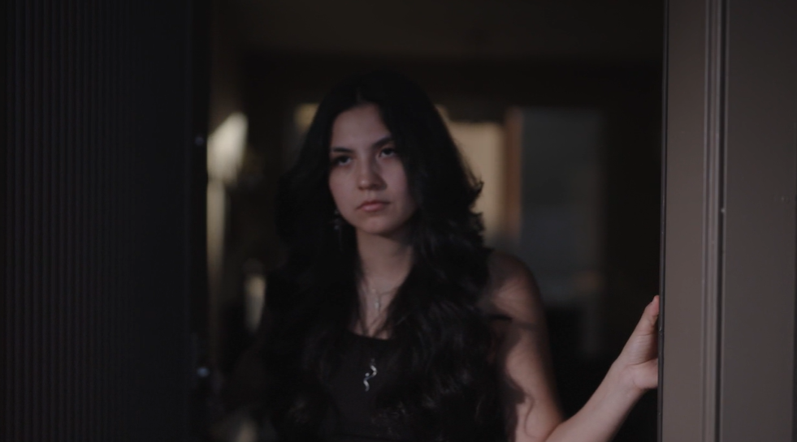
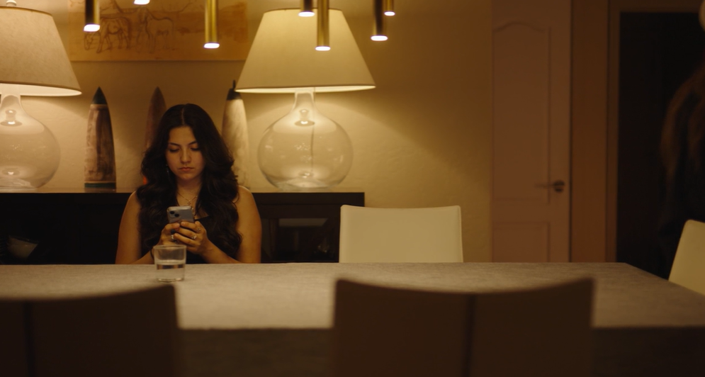
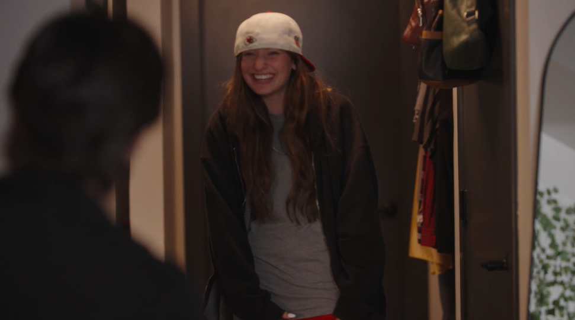
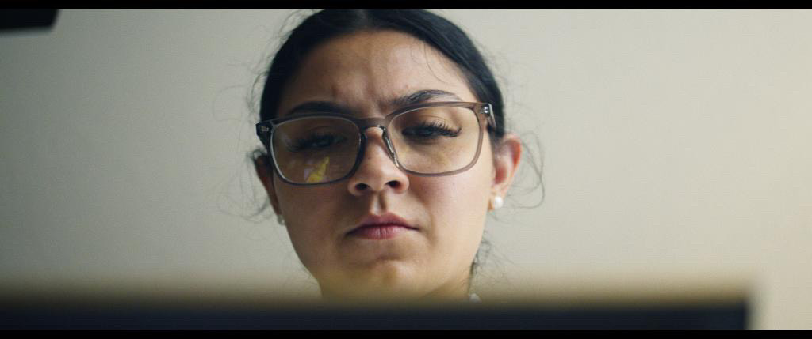
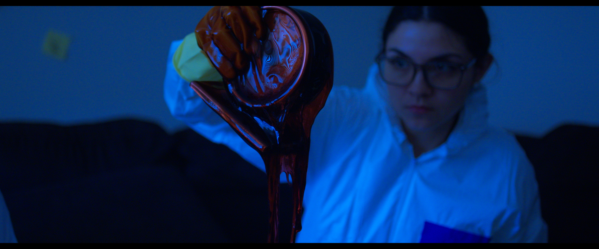
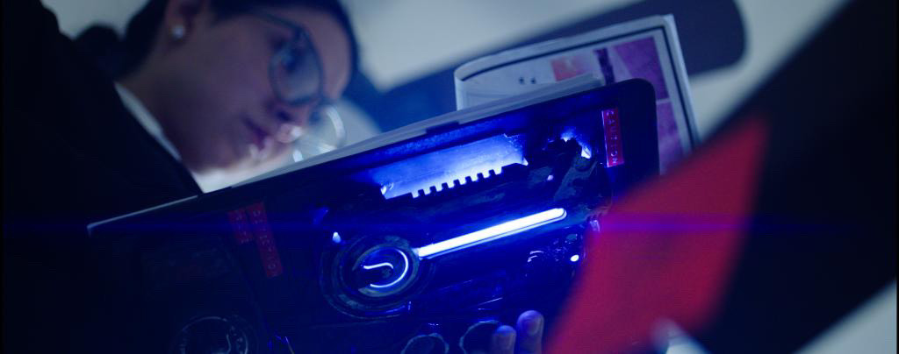

Acting Projects
My Roomate's A Vampire
My Roomate's A Vampire is a comedy short film that follows the misadventures of a college student who discovers that her new roommate is a vampire. I played the role of the Vamipre, and had the opportunity to work with a talented cast and crew to bring this fun and quirky story to life. On this project, I had the chance to work with my first stunt coordinator, which was an incredible learning experience. I also had the opportunity to perform some of my own stunts, which was both challenging and rewarding. Overall, My Roomate's A Vampire was a fantastic project that allowed me to grow as an actor and collaborate with some amazing people in the industry.
Can Grace Stay Over?
Can Grace Stay Over? is a comedy short film that follows the story of a young woman named Grace, whose boyfriend attempts to have a sleep over with her by convincing his parents that she is a lesbian. I played the role of Mia, the sister of the boyfriend, who makes Mia realize her sexuality and encourages her to come out to her boyfriend. This project was a great opportunity for me to explore a different type of character and work with a talented cast and crew. I enjoyed the challenge of portraying Mia, and I am proud of the final product that we created together.
The Nowhere Box
The Nowhere Box is a dark experimental thriller short film that follows the story of two agents discovering a mysterious box that has the power to destroy anything in its vacinity. I played the role of Nour, and had the opportunity to work with a talented cast and crew to bring this unique and intriguing story to life. This project was a great opportunity for me to explore a different genre and challenge myself as an actor. I am grateful for the experience of working on such a creative and innovative project, and I am proud that it had its first showing at the Dog Pit Festival.





